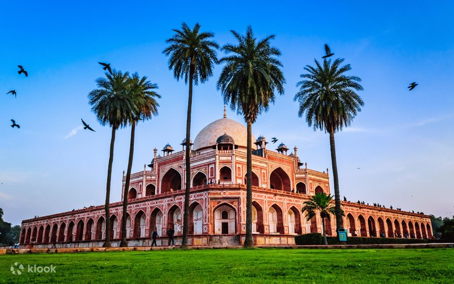

Introduction
Humayun's Tomb is one of the most significant Mughal monuments in Delhi and a UNESCO World Heritage Site. Built in 1570, it was the first garden-tomb constructed in India and later inspired the architectural design of the Taj Mahal.
The monument marks the resting place of Emperor Humayun, the second Mughal ruler of India. Its grand scale and symmetrical design reflect the beginning of classic Mughal architecture.

Historical Background
After Emperor Humayun died in 1556, his wife Empress Bega Begum commissioned this magnificent tomb. The structure was designed by Persian architect Mirak Mirza Ghiyas.
The tomb introduced Persian-style Charbagh gardens to India, which later became a defining feature of Mughal monuments.
Several members of the Mughal royal family are also buried within the complex.
Architectural Features
Humayun’s Tomb is built primarily from red sandstone with white marble detailing. The monument stands on a raised platform and features a large central dome.
- Charbagh four-part garden layout
- Double dome construction
- Beautiful white marble dome
- Arched entrances on all sides
- Intricate lattice (jaali) stonework
- Water channels and geometric pathways
The perfect symmetry and balanced proportions make it one of the finest examples of early Mughal architecture.

UNESCO Heritage Status
Humayun’s Tomb was declared a UNESCO World Heritage Site in 1993. It is considered a masterpiece of Mughal garden-tomb architecture.
The monument represents a major shift in Indian architectural history and paved the way for later Mughal masterpieces.
Travel Guide
- Location : Nizamuddin East Delhi
- Timings : 6:00 AM – 6:00 PM
- Ticket : ₹40 Indian Visitors (Approx)
- Best Season : October to March
- Nearest Metro : JLN Stadium or Jor Bagh
Visitor Tips
- Visit early morning for peaceful experience.
- Photography is allowed in outdoor areas.
- Wear comfortable footwear for walking.
- Combine visit with nearby monuments like Lodhi Garden.
Conclusion
Humayun's Tomb stands as a milestone in Mughal architecture and Indian heritage. Its garden layout, majestic dome and elegant symmetry make it one of Delhi’s most admired historical monuments.